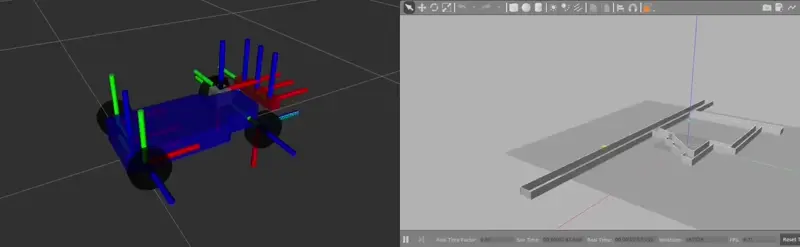

ROS2 Challenge#
This is my solution to the ROS2 Challenge to show my understanding of ROS2.
I have used Ubuntu:Focal docker image and source installed Ros2 Foxy for these tasks.
docker pull ubuntu:focal
Important
I cannot upload another YouTube video for next 24 hours. Upload limit or something. I will upload the video and update this page as soon as the limit expires
‘Hello! ROS2 is fun’#
This is introduction to creating a simple publisher and subscriber in ROS2. Basically there is one node that listens on a topic on which the other node talks.
{kind=link}
Creating ROS2 package:#
cd <path/to/ros2_ws>/src
ros2 pkg create ros2_is_fun --build-type ament_cmake --dependencies std_msgs rclcpp
This will create ros2_is_fun package with following files and directory inside it.
ros2_is_fun/
CMakeLists.txt
package.xml
include/ros2_is_fun
src/
For more info on the function of these files see What makes up a ROS 2 package?
The source code publisher.cpp and subscriber.cpp will be added in the src directory.
The CMakeLists.txt will be edited to add the executable to the package and install them.
add_executable(publisher src/publisher.cpp)
ament_target_dependencies(publisher rclcpp std_msgs)
add_executable(subscriber src/subscriber.cpp)
ament_target_dependencies(subscriber rclcpp std_msgs)
install(TARGETS
publisher
subscriber
DESTINATION lib/${PROJECT_NAME})
Building the package#
colcon build --packages-select ros2_is_fun
Using the package#
To be able to run the executables, first source the setup files from install directory.
source install/local_setup.bash
source install/setup.bash
Run the executables:
ros2 run ros2_is_fun publisher
ros2 run ros2_is_fun subscriber
{kind=link}
Source Code#
Source Code
#include <chrono> // for std::chrono (time utilities)
#include <functional> // for std::bind
#include "rclcpp/rclcpp.hpp"
#include "std_msgs/msg/string.hpp"
class PublisherNode : public rclcpp::Node
{
public:
PublisherNode() : Node("publisher_node")
{
count_ = 0;
publisher_ = this->create_publisher<std_msgs::msg::String>("topic", 10);
timer_ = this->create_wall_timer(
std::chrono::milliseconds(1000),
std::bind(&PublisherNode::timer_callback, this)
);
}
private:
void timer_callback()
{
auto message = std_msgs::msg::String();
message.data = "(" + std::to_string(count_++) + ") Hello! ROS2 is fun";
RCLCPP_INFO(this->get_logger(), "Publishing: '%s'", message.data.c_str());
publisher_->publish(message);
}
rclcpp::TimerBase::SharedPtr timer_;
rclcpp::Publisher<std_msgs::msg::String>::SharedPtr publisher_;
size_t count_;
};
int main(int argc, char **argv)
{
rclcpp::init(argc, argv);
std::shared_ptr<PublisherNode> node = std::make_shared<PublisherNode>();
rclcpp::spin(node);
rclcpp::shutdown();
return 0;
}
#include <functional> // for std::bind
#include "rclcpp/rclcpp.hpp"
#include "std_msgs/msg/string.hpp"
using std::placeholders::_1;
class SubscriberNode : public rclcpp::Node
{
public:
SubscriberNode() : Node("subscriber_node")
{
subscription_ = this->create_subscription<std_msgs::msg::String>(
"topic", 10, std::bind(&SubscriberNode::topic_callback, this, _1)
);
}
private:
void topic_callback(const std_msgs::msg::String::SharedPtr message)
{
RCLCPP_INFO(this->get_logger(), "Msg Rcvd: '%s'", message->data.c_str());
}
rclcpp::Subscription<std_msgs::msg::String>::SharedPtr subscription_;
};
int main(int argc, char **argv)
{
rclcpp::init(argc, argv);
std::shared_ptr<SubscriberNode> node = std::make_shared<SubscriberNode>();
rclcpp::spin(node);
rclcpp::shutdown();
return 0;
}
Visualizing Laser Scan Data#
{kind=link}
This part involves using laser sensors to scan the environment and visualize the data in rviz2.
Pre-requisites#
I have used turtlebot3_burger as the robot model, and dynamic_world as a model for the world.
Environment Setup#
My ~/.bashrc includes these lines:
source /opt/ros/foxy/setup.bash
source /usr/share/colcon_cd/function/colcon_cd.sh
export _colcon_cd_root=/opt/ros/foxy/
source /usr/share/colcon_argcomplete/hook/colcon-argcomplete.bash
export TURTLEBOT3_MODEL=burger
export GAZEBO_MODEL_PATH=/usr/share/gazebo-11/models:/opt/ros/foxy/share/turtlebot3_gazebo/models/:$GAZEBO_MODEL_PATH
Also, the package models if any need to be added to the path as well.
export GAZEBO_MODEL_PATH=/home/ros2_ws/src/jde_ros2_asgn/models:$GAZEBO_MODEL_PATH
Nodes#
To view the Laser Scans we need atleast 4 nodes:
Gazebo - The simulation environment.
gazebo $(ros2 pkg prefix --share jde_ros2_asgn)/worlds/dynamic_world.world
Robot State Publisher - To broadcast the state of the robot to the tf2 transform library.
ros2 run robot_state_publisher robot_state_publisher $(ros2 pkg prefix --share turtlebot3_description)/urdf/turtlebot3_burger.urdf
Teleop Twist Keyboard - The title is self-explanatory.
ros2 run teleop_twist_keyboard teleop_twist_keyboard
RViz2 - ROS vizualtion tool
rviz2
Launching the nodes#
I have created a launch file named laser_scan.launch in launch directory to launch all the nodes from one command.
(Except for the keyboard node, you know why.)
ros2 launch jde_ros2_asgn laser_scan.launch.py
and
ros2 run teleop_twist_keyboard teleop_twist_keyboard
Source Code#
laser_scan.launch.py
# -*- coding: utf-8 -*-
"""
Description: TODO
Author: Muhammed Abdullah Shaikh
Date Created: Mar 14, 2024
Last Modified: Mar 14, 2024
Python Version: 3.8.11
License: BSD-3-Clause License
"""
import launch
from launch.substitutions import Command, LaunchConfiguration, PathJoinSubstitution
from launch.actions import DeclareLaunchArgument, IncludeLaunchDescription
from launch.launch_description_sources import PythonLaunchDescriptionSource
from launch_ros.substitutions import FindPackageShare
from launch_ros.actions import Node
def generate_launch_description():
pkg_jde_ros2_asgn = FindPackageShare('jde_ros2_asgn')
pkg_gazebo_ros = FindPackageShare('gazebo_ros')
pkg_turtlebot3_descrition = FindPackageShare('turtlebot3_description')
urdf_path = PathJoinSubstitution([pkg_turtlebot3_descrition, 'urdf', 'turtlebot3_burger.urdf'])
world_path = PathJoinSubstitution([pkg_jde_ros2_asgn, 'worlds', 'dynamic_world.world'])
rviz_config_path = PathJoinSubstitution([pkg_jde_ros2_asgn, 'rviz', 'laser_scan.rviz'])
return launch.LaunchDescription([
DeclareLaunchArgument(
name='world',
default_value=world_path,
description='Absolute path to world file'
),
DeclareLaunchArgument(
name='rvizconfig',
default_value=rviz_config_path,
description='Absolute path to rviz config file'
),
DeclareLaunchArgument(
name='use_sim_time',
default_value='false',
description='Use simulation (Gazebo) clock if true'
),
IncludeLaunchDescription(
PythonLaunchDescriptionSource(
PathJoinSubstitution([pkg_gazebo_ros, 'launch', 'gzserver.launch.py'])
),
launch_arguments={'world': LaunchConfiguration('world')}.items(),
),
IncludeLaunchDescription(
PythonLaunchDescriptionSource(
PathJoinSubstitution([pkg_gazebo_ros, 'launch','gzclient.launch.py'])
),
),
Node(
package='robot_state_publisher',
executable='robot_state_publisher',
parameters=[{'use_sim_time': LaunchConfiguration('use_sim_time', default='false')}],
arguments=[urdf_path]
),
Node(
package='rviz2',
executable='rviz2',
name='rviz2',
output='screen',
arguments=['-d', LaunchConfiguration('rvizconfig')],
),
])
{kind=link}
If I only had more time.#
I used up ~1.5 weeks of time for the following to work. Why? Because the challenge said “(or any other robot if you wish to).”
The issues mentioned were not the limitation, but the time was. Hence I then decided to move forward with the TurtleBot3.
{kind=link}
This is racecar model and tunnel world taken from mit-racecar which I guess is used for labs in Robotics: Science and Systems (MIT Course).
The issues I faced:
Spawning the robot URDF in Gazebo. (I beleive version issues or my skill isssues.)
The package was written using ROS kinetic.
The racecar is Ackermann-steering Robot, and this was my first time working with ackermann steering.
The other candidate robot model I had in mind was Sahayak-v3 developed at IvLabs.

Use of AI#
Why add this section? Because I read a discussion where @jmplaza mentioned how selection process is more rigorous in these ChatGPT times.
I have not used any assitance of AI tools like ChatGPT, co-pilot, etc for the programming part of this challenge.
Also, AI is still not very good at debugging ROS errors.
I have included the reveleant resources I used during this challenge.
References#
ROS & Docker: Docker Commands
ROS2 Foxy Tutorials: Writing a simple publisher and subscriber (C++)
std::bindfunction in C++: Bind Function and Placeholders in C++Gazebo not showing my models: include a model which is not in default path
Slow Colcon Build:
colcon buildon OSX is orders of magnitude slower than directmakeDynamic World Model: Dataset-of-Gazebo-Worlds-Models-and-Maps
View URDF in Gazebo: foxy/Tutorials/Intermediate/URDF & URDF in Gazebo
Saving Maps answers.ros.org/timeout error while saving map
ROS2 TurtleBot3: ros2_turtlebot3
Racecar URDF: mit-racecar/racecar_gazebo
Sahayak-V3: IvLabs/Sahayak-v3
Notes from courses done: ROS2 (Foxy-Humble) For Beginners I & ros-essentials